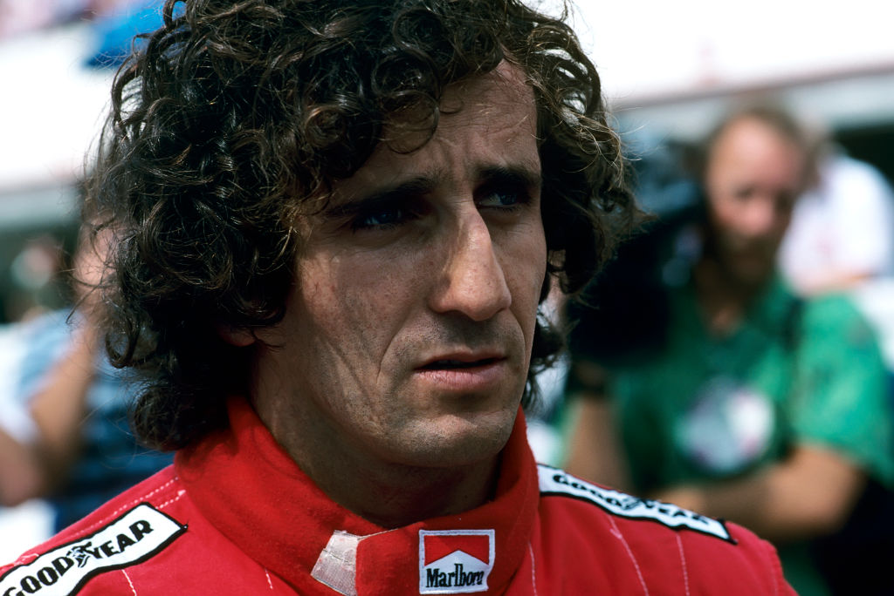
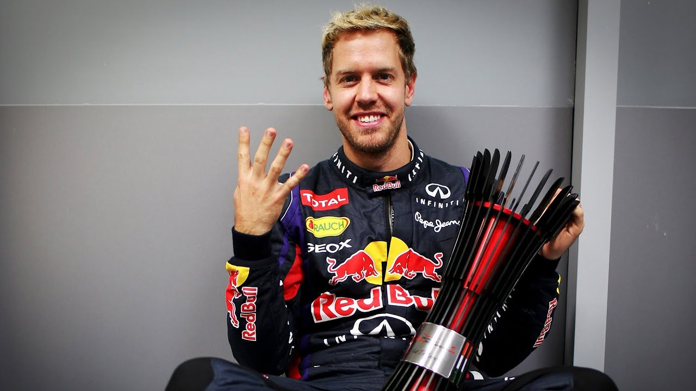

Michael Schumacher

Ülke: Almanya
Şampiyonluklar: 7 (1994, 1995, 2000, 2001, 2002, 2003, 2004)
Michael Schumacher Formula 1 tarihinin en büyük pilotlarından biri olarak kabul edilmektedir. Yedi Dünya Şampiyonluğu kazanarak Lewis Hamilton ile birlikte en fazla şampiyonluk kazanan pilot olmuştur. Schumacher, özellikle 2000'li yıllarda Ferrari ile elde ettiği başarılarla efsaneleşmiştir.
Lewis Hamilton

Ülke: Birleşik Krallık
Şampiyonluklar: 7 (2008, 2014, 2015, 2017, 2018, 2019, 2020)
Lewis Hamilton 21. yüzyılın en baskın Formula 1 pilotlarından biridir. Yedi Dünya Şampiyonluğu ile, Michael Schumacher ile en fazla şampiyonluk kazanan pilotlardır. Ayrıca Hamilton, spor içinde çeşitlilik ve eşitlik adına da önemli bir savunucudur.
Juan Manuel Fangio

Ülke: Arjantin
Şampiyonluklar: 5 (1951, 1954, 1955, 1956, 1957)
Juan Manuel Fangio, Formula 1'in ilk yıllarında önemli başarılar elde eden bir pilot olarak kabul edilir. Beş Dünya Şampiyonluğu kazanan Fangio, sporun çok daha tehlikeli olduğu bir dönemde yarışmış ve stratejik yaklaşımıyla ünlü olmuştur.
Alain Prost
Ülke: Fransa
Şampiyonluklar: 4 (1985, 1986, 1989, 1993)
Alain Prost, "Profesör" olarak bilinir ve yarış stratejisiyle tanınır. 1980'ler ve 1990'ların başında dört Dünya Şampiyonluğu kazanmış olan Prost, özellikle Ayrton Senna ile olan rekabetiyle Formula 1 tarihine damgasını vurmuştur.
Sebastian Vettel
Ülke: Almanya
Şampiyonluklar: 4 (2010, 2011, 2012, 2013)
Sebastian Vettel, 2010'da en genç Dünya Şampiyonu unvanını kazanmış ve Red Bull Racing ile dört yıl üst üste şampiyon olmuştur. Sürekli istikrarı ve liderlik özellikleriyle, Vettel o dönemin en baskın isimlerinden biri olmuştur.
Max Verstappen

Ülke: Hollanda
Şampiyonluklar: 4 (2021, 2022, 2023, 2024)
Max Verstappen, Formula 1'in en yetenekli pilotlarından biri olarak gösterilmektedir. 2024'te dördüncü Dünya Şampiyonluğunu kazandı. Verstappen, agresif yarış tarzı ve cesur manevralarıyla tanınıyor ve geleceğin yıldızlarından olarak görülüyor.